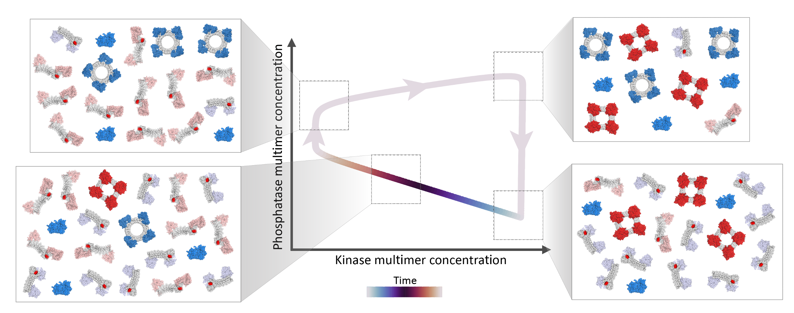

Building an oscillator entirely out of proteins
Most of the functions carried out by your cells are reliant on protein molecules that bind to one another — and to RNA and DNA — in particular ways. I continue to find this amazing, that cells can achieve such intricate behaviors just by having these molecules bind to one another in prescribed ways. One of the most incredible examples of this in my opinion is the KaiABC system in cyanobacteria. Cyanobacteria are a type of bacteria that photosynthesize (like plants). Because they rely on the sun as their energy source, they have evolved a circadian clock that tells them to change their behavior at dusk and at dawn. We have a circadian clock too – this is what makes us get sleepy at night and wake up in the morning, even if we’re in a dark room and don’t directly observe the day/night cycle outside. The cyanobacteria circadian clock is special because it (mostly) relies on only three proteins, called KaiA, KaiB, and KaiC (pronounced like “sky” without the “s”). These proteins are collectively termed the KaiABC system. Even by just putting these three proteins in a test tube, researchers have observed periodic, repeating behavior (“oscillations”) with a ~24-hour cycle. What happens is that as a result of particular binding events between the proteins, all of the KaiC proteins collectively get modified (“phosphorylated”), and then all together get unmodified, such that they revert back to their original state after ~24 hours.
In recent decades, we have made huge strides in designing new proteins to perform particular functions. The Baker lab, with whom this project was developed, are particularly expert at this. But while biology has managed to evolve this oscillating circuit reliant on only three proteins, we have not been able to design our own proteins to achieve similar oscillations. In this paper, we aimed to bridge this gap.
The hardest part of this project was not coming up with a set of binding events that would lead to collective oscillations; it was doing so within the bounds of what we know how to design today (see Fig. S1 in the Supplement of the paper). Ultimately, we were able to devise a circuit that would collectively oscillate, and we showed how tuning the binding and unbinding rates of the various proteins would yield oscillations of a desired period.
The circuit relies on two proteins (I’ll call them A and B here, though we called them something different in the paper). Two A proteins that bind to one another (i.e. “self-assemble”) create a kinase, which when it binds to an A or a B protein can add a phosphate group which prevents it from self-assembling. Two B proteins that bind one another create a phosphatase, which can bind a phosphorylated A or B protein and remove the phosphate group, thus allowing it to regain the ability to self-assemble into a kinase (if it’s an A protein) or a phosphatase (if it’s a B protein). The oscillations follow the following pattern: 1) The proteins start off unassembled and unmodified. They then start randomly bumping into one another and assembling, but the assembled proteins also spontaneously disassemble. 2) The phosphatases disassemble faster than the kinases in our model. Then the kinases add phosphate groups preventing the phosphatases from reassembling. 3) The kinases slowly disassemble, and the remaining kinases add phosphate groups preventing their reassembly. 4) Once the kinase population is low enough, the few phosphatases that haven’t disassembled start removing phosphate groups, enabling more and more phosphatases to assemble, and removing more and more phosphate groups. 5) The process repeats once the proteins have been dephosphorylated and have reassembled.
In order to achieve the desired oscillatory behavior, certain relationships between the binding and unbinding rates of the different proteins have to hold. We found that even though there are many parameters in the system, only two combinations of these parameters affect whether the system will oscillate. We further found that only one parameter affects the period of the circuit, and by changing that parameter, the oscillation period can be set anywhere from minutes to days.
In short, we showed that given only a simple set of binding rules, we can recreate the astounding oscillatory behavior of the KaiABC system in a synthetic context that we expect to be experimentally realizable.